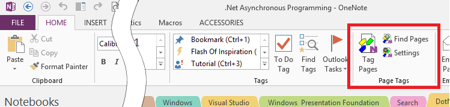

OnenoteTaggingKit Documentation
The OneNoteTaggingKit is a free to-use add-in to add page tagging to OneNote for the desktop.
Feature Summary:

- Page Tags can be added/removed from pages on-the-fly
- Search refinement using page tags (facetted search)
- Page tags are available and fully operational for all users of shared _OneNote_notebooks (requires add-in to be installed on _OneNote_clients)
- Full compatibility with built-in _OneNote_tagging system, even if add-in is not installed.
- Locating notes related to the _OneNote_page currently being viewed
System Requirements
- OneNote 2010, 2013, 2016, 2019 or later, OneNote 365 Desktop (from Office 365). 🛑 The Windows App Store version is not supported.
- Windows 7, 8, 8.1, 10 (32-bit/64-bit); Windows Server 2008 R2 or later
- .net 4.5
To instructions on how to check the OneNote version refer to OneNote Version Check
Installation and Upgrade
The add-in can be installed or upgraded in one of the following ways:
Direct Installation / Upgrade
- Verify that the system requirements are met.
- Download the installer (*.msi) from Releases
- Make sure OneNote is not running! Exit OneNote if necessary.
- For first time installation and upgrade execute the downloaded installer (*.msi)
- Start OneNote.
Installation / Upgrade via the Chocolatey Package Manager
Chocolatey can be installed here. If you are wondering why you would want to use Chocolatey, here is why
Verify that you have a supported version of OneNote. See OneNote Version Check on how to do that.
Make sure OneNote is not running! Exit OneNote if necessary.
Open a new PowerShell command prompt with admin privileges.
Excecute one of the following commands
First Time Install
PS C:\> choco install onenote-taggingkit-addin.installUpgrade
PS C:\> choco upgrade onenote-taggingkit-addin.install
Upon successfull installation the OneNote Tagging Kit actions should now be
available on the Home tab in
the Page Tags command group (next to the built-in Tags command group)

If you do not see this ribbon extension please refer to Tagging Kit Actions Not Shown in Ribbon
Reporting Bugs and Requesting Features
If you think the Tagging Kit is not working as it should, please check the troubleshooting tips first.
TaggingKit Development
The developer documentation can be found at here.
Following tools are required to develop your own version of the TaggingKit:
- VisualStudio 2019 or later. See Install Visual Studio
- Windows Installer Toolset WiX. Get the recommended build
- Sandcastle Help File Builder (SHFB) for building help files with the Sandcastle tools. Get the latest release for GitHub EWSoftware/SHFB
- If you want to manage your clone of the TaggingKit on GitHub it is also recommended to use the Git distributed version control system: Get it from the the Git - Downloads page.